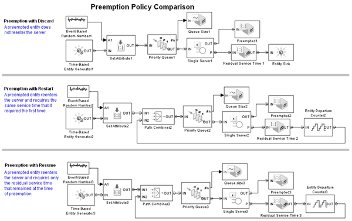

Preemption Policy Comparison
Contents
Overview
This model compares three policies for working with entities that have been preempted from a server.
Structure
The three policies compared in this model for working with entities that have been preempted from the server are:
- Preemption with discard — A preempted entity cannot reenter the server
- Preemption with restart — A preempted entity reenters the server and requires the same service time that it required the first time
- Preemption with resume — A preempted entity reenters the server and requires only the residual service time that remained at the time of preemption